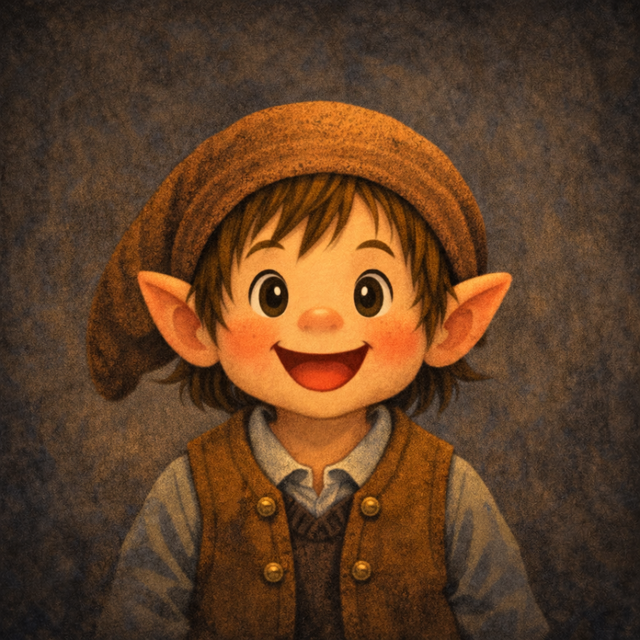

みんなが眠っている
あいだに、ボクが働きます。
ボクはElliot。夜のあいだに、会社に溜まった記録——会議のメモ、商談の記録、日報——を読み解いて、朝までに「これは知っておいたほうがいい」ことをまとめてお届けします。

名前は、靴屋が眠っているあいだに小人たちが靴を仕上げてくれる、あの童話から取りました。
朝、仕事場に降りてみると、革はきれいな靴に変わっている。誰がやったのかは分からないけれど、確かに仕事は前に進んでいる。Elliotがやろうとしているのは、それとほとんど同じことです。
Elliotの、ある一晩。
みなさんが仕事を終えてから、翌朝出社するまでのあいだに起きていることです。
-
21:00
その日の記録が集まる
社員それぞれのフォルダに保存された議事録・商談メモ・日報が、集約フォルダに揃います。集約フォルダは御社のGoogleドライブ内にあります。
-
01:00
読みはじめる
会議、商談、日報。書式も長さもばらばらのテキストを、種類をまたいで読み込みます。書き方を統一していただく必要はありません。
-
04:00
突き合わせる
同じ案件について複数の人が書いたこと、先週との違い、繰り返し出てくる言葉。ひとつの記録だけでは気づけない変化を拾います。
-
07:00
朝、要点が届く
出社したときには、昨日社内で何が起きていたかがまとまっています。すべてを要約するのではなく、知っておいたほうがいいことだけを選んでいます。
-
月末
1か月をまとめる
1か月分を振り返り、経営者向けのレポートを作ります。日々の要点では見えにくい変化や傾向をまとめます。
モニターの条件
モニタープログラム共通の条件に沿った内容です。詳しい要項はElliotの募集要項にまとめています。
記録は御社のGoogleドライブ内に置いたまま扱います。データの取り扱いの詳細は、開始前に書面で確認します。
今夜から、Elliotを働かせてみませんか。
フォームの送信後、担当の西村よりメールでご連絡します。まずは初期設定の打ち合わせで、設定と使い方をご案内します。
掲載内容・募集状況・提供条件は変更される場合があります。